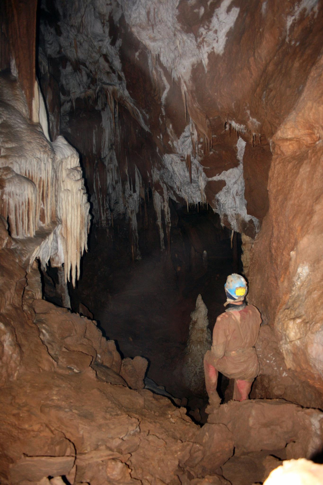
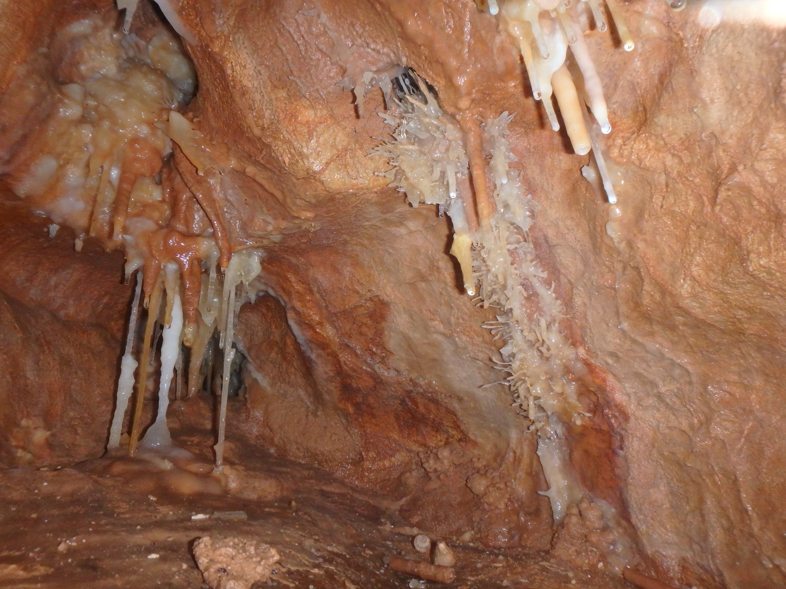

Iulian
This is my Hobby & School Site
Speleologist
I explore and map caves and oats.
Favorite books
Speologie. Ghid practic - Povara Ioan, Cristian Goran, Walter F. Gutt
Aventuri Sub Pamant - Norbert Casteret
Tehnica Spologie Alpine - Viorel Lascu, Andrei Posmosanu
Speologie si muzica in pestera Romanesti - Constantin Lupu
Speleological Experience
Date
Cavity
2008 - 2020
Avenul din Poiana Gropii
2004 - 2020
Pestera Tolosu
Skills
Exploration
★★★★★
Equipping
★★★★☆
Mapping
★★★☆☆
Photo
★★★☆☆
My Hobbies
Contact Me
Udemy Web Development Courses
Lesson 3.25 HTML Forms
 